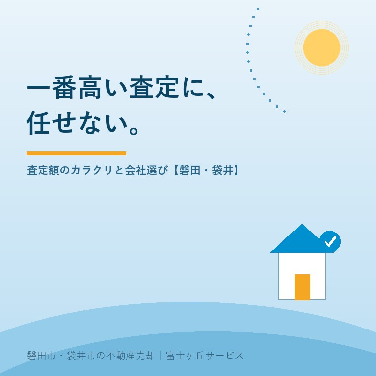

2026年8月1日｜カテゴリ：査定・売却の実務

この記事の要点
Q. 3社に査定を頼んだら金額がバラバラ。一番高い会社に任せればいい？
A. それは危険です。査定額は「この金額で売れる保証」ではなく各社の見立てにすぎず、なかには媒介契約を取るためにあえて高い金額を出す「高預かり」もあります。大切なのは金額の高さではなく、根拠（どの成約事例と比べたか）と売却戦略の説得力です。磐田市・袋井市・森町では、介護施設の運営から不動産事業を始めた富士ヶ丘サービスのような地域密着の会社に、査定書の根拠から確かめるという選択肢があります。
実家の売却でまず行うのが査定。今朝の記事で書いたとおり、売却の入口です。ところが複数社に頼むと、金額が数百万円単位でバラつくことがよくあります。「1,180万円」「1,350万円」「1,580万円」──さて、どの会社に任せますか？ 一番高い会社を選びたくなるのが人情ですが、不動産屋として正直に言います。その選び方が、いちばん高くつくことがあります。今日は、査定額がどう作られているかというカラクリの話です。
戸建てや土地の査定は、鑑定士の「不動産鑑定」とは別物で、多くの会社は公益財団法人不動産流通推進センターの「価格査定マニュアル」などに沿って算出します。基本の考え方はこうです。
つまり査定の心臓部は「どの成約事例と比べたか」です。宅建業法でも、媒介価額について意見を述べるときはその根拠を明らかにすることが義務付けられています（第34条の2）。根拠を示さない・示せない査定は、その時点で信頼度が下がると考えてください。
| 言葉 | 意味 |
|---|---|
| 査定額 | 「この程度なら3か月前後で売れるだろう」という予想。保証ではない |
| 売り出し価格 | 売主が決める戦略。査定額より少し上に置いて交渉余地を持たせることも多い |
| 成約価格 | 買主との交渉を経た結果。市場が最終的に決める |
この3つの区別がつくと、「高い査定額」の意味が変わって見えてきます。査定額はどこまで行っても予想。高い予想を出すこと自体には、1円のコストもかからないのです。
売主は高い査定に心が動く。それを知っていて、媒介契約（とくに専任媒介）を取るために、相場から離れた高い査定額を出す──業界で「高預かり」と呼ばれる悪癖です。預かった後はどうなるか。相場より高い家に買主は現れず、問い合わせのない数か月が過ぎ、「反響がないので」と値下げ提案が始まります。結局は相場前後で成約し、失ったのは半年の時間。空き家の場合、その間も固定資産税・保険・草刈りの負担は続き、家は傷み続けます。次のサインが重なったら注意してください。
そのうえで会社を選ぶ基準は、金額ではなく「根拠と戦略に納得できるか」「地域の成約をどれだけ知っているか」「実家特有の事情（名義・農地・残置物）まで並走してくれるか」です。
当社の査定は、磐田・袋井の成約事例と、この地域特有の事情（敷地の広さ、農地、旧集落の道路事情）を織り込んで算出します。正直に申し上げると、お客様の期待より低い金額をお伝えする場面もあります。それでも根拠と戦略をセットでご説明するのは、高い数字で預かって時間を失うことが、結局お客様の手取りを一番減らすと知っているからです。査定は無料ですし、他社の査定書のセカンドオピニオンとしてのご相談も歓迎します。
富士ヶ丘サービスは、磐田市・袋井市に特化した地域密着の会社として、「高く見せる査定」ではなく「高く売り切るための正直な査定」を大切にしています。ふじがおか実家カルテ・実家じまい相談室とあわせてご利用ください。
ふじがおか実家カルテ｜査定の前の「前提整理」に
名義・道路・支障の有無。査定の精度は、準備で決まる。
登記情報と固定資産税通知書から売却の前提条件を宅建士が確認し、根拠のある査定につなげます。他社査定書のセカンドオピニオンもどうぞ。
本記事は2026年8月1日時点の情報をもとに作成しています。査定手法・査定額の考え方は会社により異なります。本記事は特定の事業者を批判するものではなく、一般的な注意点をまとめたものです。

この記事を書いた人：大石浩之（宅地建物取引士）
磐田市・袋井市・森町で「介護×相続×空き家」に特化した不動産売却支援を行う富士ヶ丘サービスの代表取締役・宅地建物取引士。介護施設の運営から不動産事業を始めた経験をもとに、売主とご家族が困らない売却を一件ずつお手伝いしています。プロフィール
磐田市・袋井市・森町の実家じまい・相続空き家相談
固定資産税通知書だけでも相談できます
住所があいまいでも、通知書や写真から名義・道路・農地・残置物の確認順を整理します。カルテ申込またはLINEで状況を送ってください。
富士ヶ丘サービス株式会社／静岡県磐田市見付5789番地1／TEL:0538-31-3308／静岡県知事 (2) 第14083号／代表取締役・宅地建物取引士 大石 浩之